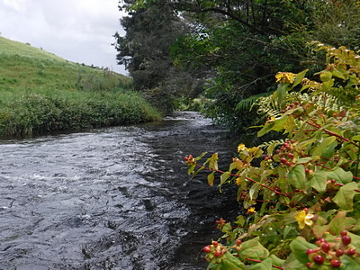

釣行日誌 ＮＺ編 「一期一会の旅：A Sentimental Journey」
午後の雷鳴
12/02(SUN)-2
左岸に灌木が立っており、その下には鱒の隠れていそうな淀みのポイントにたどり着いた。左から低く投げ込もうと努力するが、16ftほどの長めのリーダーに苦しみ、思うような所にフライが入らない。

目標を低く、などと考えていたらバックキャストも低くなって背後の草にフライを引っかけてしまう。
『これはアカン....』
自嘲しながら牧草地に登ってフライを草の葉から取り外し、さてもう一度！などとロッドを振りかぶったら、いきなり山頂の方角から雷鳴が聞こえた。見ると、山頂から南側の斜面にかけて黒い雲がかかっている。
『うゎ！ これはまずいっ！』
北側の空にはぽっかりと穴が空いて青空が見えているが、山頂と南麓には凶悪な黒雲が垂れ込めて広がり、動く気配が無い。
何を隠そう、僕は世の中のうちで雷ほど怖い物は無いのである。深い谷に面した斜面に寄り添うように固まった集落のうちの一軒に育った子供の頃、家の隣の電信柱に落雷があり、とてつもない閃光と轟音と共にちゃぶ台の上の茶碗や皿が一瞬飛び上がった時の恐怖は今でも忘れない。
木曽谷の森の中でばったり出遭うツキノワグマと、ニュージーランドの牧場での落雷と、どちらが怖いかと聞かれれば答えに窮する。が、しかし、熊と乱闘になって撃退した人の話はちょくちょく聞くが、雷の直撃を受けて生存できる可能性はどのくらいあるのか？ このだだっ広く平らな牧草地で、ロッドをはじめとして金目の物をいっぱい身につけてウロウロしていれば、雷撃を喰らう可能性はかなり高いだろう。
今から思えば、この最初の雷鳴を聞いた時点で即刻撤退すれば良かったのだが....。上流に見えた魅力的な渓相と、そこに潜むであろう大物鱒のことを考えると、ついつい雷雲が遠のくのではないか、という期待に寄りかかってしまったのだ。
とりあえず牧草地に上がりフライロッドとベストを近くの土手に放り投げ、再び流れに入ってから近くの低い灌木の下にしゃがみ込む。対岸には雨宿りできそうな木もあるが、木の下は雷の避難所には適さないという事を聞いたことがあった。両足は流れに浸かったままで茂みに身を寄せ、ひたすら祈る。 が、ふと考えてみると、もしも雷が体に落ちた場合、水の中に足を浸けていたらモロに電流が通り抜けるのでイチコロではないかと考え直し、ズリズリと土手に這い上がり、灌木の下に這いつくばって上半身を隠す。オシリは出したまま。（笑）
なんとかあの黒雲が南か西へと遠ざかってくれないかと祈るが、あまり動く気配は無い。たまに稲光がフラッシュし、続いて雷鳴が聞こえてくる。その光と音との間隔から察するに、まだ雷雲の中心部は遠いようだったが、こちらとしては気が気でない。落雷の危険性が高まるのは雨脚が一番ひどい時だと聞いたことがあったので、まだ雨が落ちてきていないことが唯一の救いであった。
眼下の牧草越しに、水が左から右へと流れ下って行く。もし僕がここで落雷を喰らって即死しても、この川は何も変わらずいつも通り流れていくのだろうなぁと思う。真偽のほどは定かではないが、飛び降り自殺などで亡くなる人は、死に至る数秒間にこれまでの人生が走馬灯のようにフラッシュバックして脳裏をよぎるそうだが、今の僕にとって回想の時間は十分過ぎるほどある。（笑）
雷鳴を聞きながら、これまでの56年の人生を振り返る。経済的には豊かでは無かったが、祖父、祖母、父、母、叔父、２人の兄たちがいる愛情あふれる家庭に生まれ、山や川といった自然豊かな土地に育ち、学校では友達にも恵まれた。社会人になってからは、土木技術者のはしくれとしていくつもの形に残る仕事が出来た。ニュージーランドに魅了されたことで大きく変わった後半生も、たくさんの素晴らしい人たちとの出会いのおかげで実り多きものとなった。妻も子も無いので、ここでぷっつりと死んでも、悲しんでくれる身内は少ない。
あれから父が逝き、お世話になっている内田さんの息子さんが突然逝き、横浜の植田紗加栄さんは今も苦しい闘病生活を送っている。ジョー・ハーマン夫人もすっかり体が弱くなった。一方で、留学生時代にはまだ子供だった僕の姪っ子や甥っ子たちは結婚して、それぞれ赤ん坊たちが生まれて来た。
ちょうど８年前のあの日、苦闘の末に釣り上げた後で、喉を掻き切った鱒の動脈から、途絶え行く心臓の鼓動に合わせて吹き出した鮮血の赤色を見た時から、僕の心の中に、茫漠と、しかし確実な死の予感というものが根付いていた。今からそれが現実となるのかもしれなかった。
海外旅行傷害保険にはしっかり加入し、保険の証書、緊急連絡先なども書き残してきた。万が一の事態に備えて正式な自筆の遺言書も作って預けてきた。遺言書の中では、旅行損害保険金の遺贈先も記しておいた。遺影に使ってほしい画像はＣＤに入れて同封した。もう使わないフライロッドは一式梱包して、旧い釣友の岡田君に宛てた送付状を貼り付けておいた。釣りの洋書のうち面白そうなものは小さな段ボール箱一杯、こちらも釣友の鰐部さん宛に梱包しておいた。遺言書には死後、それらを発送するように書いておいた。
そんな事態になったら、おそらくは長兄がハミルトンまで遺体の引き取りに来てくれることになるだろうから、各種書類と共にとりあえずの費用30万円も同封しておいた。とりあえずできうる限りの死後の準備はして来たつもりだったがだが、ふと考えてみるに、落雷事故による死亡の場合、はたして保険金が下りるのだろうか、一抹の不安は残った。
しかし、長兄、次兄はもとよりハミルトンの田島さん夫妻、大林さん夫妻にはこれまたとんでもない迷惑をかけてしまうなぁと、黒い雲を眺めつつ誠に申し訳なく思う。田島さんには今日の行き先を書き残してきたので、農道脇に停めた目立つ赤いカローラはすぐに見つかるだろうし、丘の上の家で出てきてくれた青年にも挨拶しているので、警察の方々が来て５、６人で探せば岸辺の亡骸はすぐに発見されると思われた。やや離れたところに放り投げてあるフライベストの背中には、防水ポーチに入れてパスポートも国外免許も入れてあるので顔写真で身元はすぐに照合できる。眠たげに応対してくれたあの青年も、えらいはた迷惑になるだろうなぁ....。
釣行日誌ＮＺ編 目次へ
サイトマップ
ホームへ
お問い合わせ